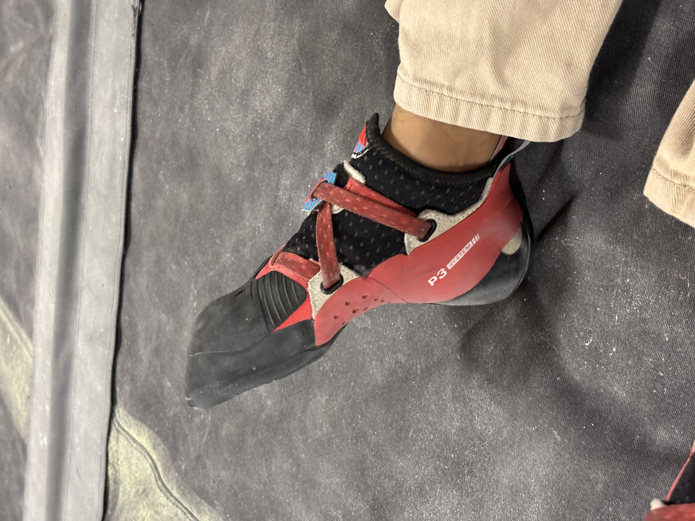

Does Performance On The Wall Come At A Cost?—La Sportiva Women's Solution Comps Review

If you’ve ever looked into getting climbing shoes, you will soon realize it’s a relatively small market. La Sportiva is one of the most well known and widely recognized brands in the climbing community. Their shoes have historically been reliable and favored by some of the best, just take a look at climbing shoes of the 2024 Paris Olympics. Today, I will be reviewing La Sportiva’s Women’s Solution Comps climbing shoes. These shoes are designed for indoor competitive climbing, meaning they focus on performance and precision, with rubber most suitable for indoor holds rather than outdoor terrain.
Reviewing climbing shoes objectively is quite difficult since their performance and comfort vary depending on the individual, their foot shape, and climbing style. To provide some context, I consider myself to be an intermediate climber and I mostly prefer bouldering, specifically slab and technical climbs. I opted for these shoes because they praised their “surgical precision” and “maximum grip” rubber. I will be reviewing these shoes based on their comfort, performance, quality for price, and versatility.
Comfort
Rock climbing shoes are notoriously uncomfortable, requiring a break-in period to mold to the climber’s feet. The La Sportiva Women's Solution Comps took a little longer to break in than most other shoes I’ve tried. Even after a few months, they aren’t entirely comfortable off the wall. During the first few weeks wearing them for more than 5 minutes was downright painful. The comfort has improved with increased use, but I still have to slide the heel off after climbs. The toe box and heel cup design lead to scarring and blisters especially early on. Now that I’ve broken them in, there isn’t as much scarring. I’m going to give them a 2 out of 5 for comfort.
Performance
The rubber on these shoes was refreshing after climbing with my old worn out pair for so long. I can stay on the wall for absurd amounts of time and rubber is incredibly grippy. Combined with the talon-like toe box, the precision on these shoes is impressive, perfect for slabby and technical climbs that require perfect foot placement. These shoes also just feel very reliable, I’m not afraid that the rubber will give out and I’ll slip and get grated against the wall. They are flexible despite being aggressive; they mold well to my feet and move as I need them to. The heel cup is absolutely reliable for heel hooks and provides dependable support on the wall. Similarly the toe box is narrow and flexible, perfect for latching onto toe hooks. I’ve been able to take my climbing to another level with these shoes, trying out more advanced and sketchy moves that I would never be able to try out with my old shoes that were not as flexible, and definitely did not have as reliable rubber. As a static climber, these shoes are perfect for trying out those balance-oriented dubious moves, or for jamming your heel into holds not made for heel hooks. These shoes have also proven their merit on overhang climbs, where keeping feet on the wall is difficult but essential, and these shoes made it easier to focus on the movement rather than focusing my energy on keeping my feet on the wall. They get a 4.5/5 on performance.
Quality
These shoes are a bank-breaking $229, making them one of the most expensive climbing shoes on the market, but they deliver incredible performance and are comparable in price to similar options. The rubber and craftsmanship are exceptional, showing little wear after months of use and maintaining strong performance, earning a 4/5 for quality despite the high price.
Versatility
These shoes are quite versatile, for slabs, overhangs, and static technical climbs, offering strong precision and balance. Even on overhang climbs, these shoes will hold on. For dynamic climbs, the grip helps with landing moves, but the aggressive shape is less helpful for explosive takeoffs. The tradeoff that comes with maximum grip and surgical precision is that there is no room for error, making them unforgiving for beginners. These shoes will grip on where the climber places their feet, which sounds like a dream come true for advanced climbers, but for beginner climbers who may not have as exact footwork, these shoes will be a pain—literally. I give them a 3 out of 5 in versatility.
Overall
4.0 / 5 - Despite the low comfort score, these shoes are a solid 4 out of 5 for me. I weigh performance and versatility much more heavily, and these have helped me improve my climbing and allowed me to implement more advanced techniques.